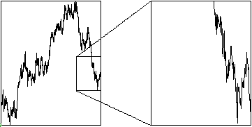

| Recall a fractal is
self-affine
if different directions must be scaled by different factors. |
| In these pictures, t is scaled by t → 4⋅t. Only
one of the three Y scaling preserve the approximate appearance of the
|
|
|
|  |
| Note the right picture looks steeper than the left. |
|
|
| The graph of Brownian motion is self-affine with the rescaling
t → 4⋅t and Y → 2⋅Y. |
| That is, the Y rescaling factor
is the square root of the t rescaling factor. These pictures give a visual interpretation
of the rescaling formula for the probabilities. |
| Here is a more analytic, but still visual, approach. |
| Here is a more mathematical approach. |